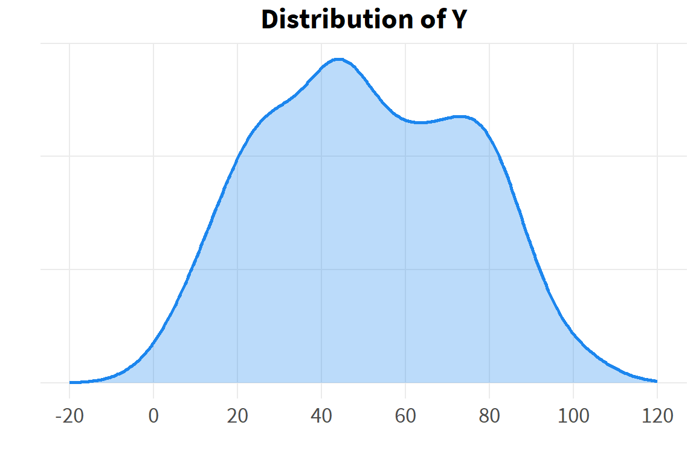

The MSI Statistical Training Series offers tutorials on a range of topics that are commonly applied in data analysis. The objective is to i) refresh readers on the derivation and application of methods from a first statistics course, ii) provide the underlying theory that goes beyond an introductory statistics course, iii) introduce readers to new methods that would not be covered in an introductory statistics course, and iv) provide practical, hands-on coding examples to enable users of statistical analysis software to gain proficiency in coding skills not just to run statistical procedures, but also to derive statistical procedures through the underlying theory.
Exploration of each topic should include the underlying theory, a demonstration using toy or fake data, and a real-world application in data that MSI has generated for a client deliverable.
Analysis of Variance (ANOVA)
The analysis of variance theorem derives from the properties of conditional expectations – see (Wooldridge 2010), pages 31-32 for a proof. The ANOVA theorem states that
\[
V(Y)=E_x(\sigma^2_{Y|X})+V_X(\mu_{Y|X})
\]
This may be paraphrased as saying the variance of a random variably Y, whose elements comprise several groups denoted as the random variable X, can be decomposed into the average variance of the sub-groups of X plus the variance of the means of each sub-group of X.
The ANOVA theorem may be used to test whether the sub-groups of X are statistically distinguishable from the overall distribution of Y. To get some intuition behind this, consider a null hypothesis in which all sub-group means of X are equal and share the same variance:
\[
H_0: \alpha_1=\alpha_2=..\alpha_g=0
\]
Note that we construct the data model as \(y_{ij}=\mu+\alpha_i+e_{ij}\), where \(y_{ij}\sim N(\mu_i, \sigma^2)\), \(\mu\) is the grand (overall) mean of the sample, and the \(\alpha_{i}\) are deviations from the grand mean. So, if all means are the same the deviations are zero.
Using the ANOVA theorem, if the \(\alpha_i\) are zero, then their variances are zero, so the first term of the ANOVA theorem drops out. Furthermore, by assumption, there is only a single variance for all sub-groups. So the second term simplifies to \(\sigma^2\).
\[
H_0: E(Y|X_i)=\mu; V(Y|X_i)=\sigma^2
\]
The alternative hypothesis would be that the group means differ, still on the assumption of equal variance across sub-groups of X.
\[
H_1: \alpha_1=\alpha_2=..\alpha_g\neq0
\]
The key here is the variance term. If the sub-group means differ, their means will have a variance around the grand mean. If this ‘between’ variance of the sub-group means around the grand mean is large relative to the ‘within’ variance of group observations around the group mean (which by assumption would just be \(\sigma^2\) for each sub-group), then we have evidence that the group means do in fact differ from the grand mean.
We use the F-distribution, which is constructed from the ratio of two chi-square statistics, to generate the probability of observing the data under the assumption that the null hypothesis is true. A high ratio of between variance to within variance will generate a high F-statistic, which will generate a low p-value.
Introductory statistics texts provide a summary table to generate the F-statistic.
# distribution of overall data Yda <-ggplot(d, aes(x=y)) +geom_density(alpha=.3, fill="dodgerblue2", color="dodgerblue2", linewidth=1) +scale_x_continuous(limits=c(-20,120),breaks=seq(-20, 120, 20)) +theme(axis.text.y=element_blank()) +labs(x="",y="",title="Distribution of Y")da

The data can be described as roughly normal, though there is clearly the beginning of a second mode at around 75, and the first hint of another mode at around 25. We know by construction that this is due to the presence of the sub-groups X. If we had knowledge only of Y but not of X, we might suspect the presence of hidden structure (sub-groups) in the data, but would not know.
# distribution of sub-groups Xgrp <-ggplot(d, aes(x=y, group=group, fill=group, color=group)) +geom_density(alpha=.3) +scale_x_continuous(limits=c(-20,120),breaks=seq(-20, 120, 20)) +scale_color_viridis_d() +scale_fill_viridis_d() +annotate("text", x=c(18, 41, 53, 78), y=.021, label=letters[1:4]) +theme(axis.text.y=element_blank(),legend.position="none") +labs(x="",y="",title="Distribution of Y|X")grp
Let’s extract the properties of the data that we will use to construct our test statistic.
g <-4# number of groupsg
[1] 4
n_g <-length(grp_a) # sample size of each groupn_g
[1] 50
N <-nrow(d) # overall sample sizeN
[1] 200
grnd_mn <-mean(d$y) # overall mean of Y grnd_mn
[1] 50.6
mns <- d %>%# sub-group meansgroup_by(group) %>%summarise(grp_mn=mean(y),se=std.error(y))flextable(mns)
group
grp_mn
se
a
25.1
1.48
b
43.5
2.59
c
57.0
2.39
d
76.7
1.68
First we need the between sum of squares. As a reminder, this is the variation of the sub-group means around their grand mean.
As the sub-group means do not vary within their own group, this reduces to the variance of the sub-group means around the grand mean, weighted by the sample size of each sub-group.
\[
SSB=\sum_{i=1}^gn_i(\bar{y_i}-\bar{y})
\]
Next we need the within sum of squares. As a reminder, this is the variation of a sub-group observation around its sub-group mean.
It can be shown that this expression is the same as the overall variance times the sample size.
\[
SSW=\sum_{i=1}^g(n_i-1)s_i^2
\]
This also matches the intuition that, under the null of equal variances, the variation of a sub-group observation around its sub-group mean is no different than the variation of any observation around the grand mean.
Let’s try to illustrate the different type of variation graphically.
set.seed(422)grp_a <-sample(1:4, 4, T)grp_a
[1] 3 4 2 4
grp_b <-sample(5:8, 4, T)grp_b
[1] 5 6 6 8
grp_c <-sample(9:12, 4, T)grp_c
[1] 10 10 12 10
d <-data.frame(id=1:12,Group=rep(letters[1:3], each=4),y=c(grp_a, grp_b, grp_c)) %>%arrange(y) d
id
Group
y
3
a
2
1
a
3
2
a
4
4
a
4
5
b
5
6
b
6
7
b
6
8
b
8
9
c
10
10
c
10
12
c
10
11
c
12
describe(d)
vars
n
mean
sd
median
trimmed
mad
min
max
range
skew
kurtosis
se
1
12
6.5
3.61
6.5
6.5
4.45
1
12
11
0
-1.5
1.04
2
12
2
0.853
2
2
1.48
1
3
2
0
-1.74
0.246
3
12
6.67
3.26
6
6.6
3.71
2
12
10
0.172
-1.56
0.94
grnd_mn <-mean(d$y)mns <- d %>%group_by(Group) %>%summarise(grp_mn=mean(y))mns
# sst total sum of squares (observations from grand mean)mns <- d %>%group_by(group) %>%summarise(grp_mn=mean(y),se=std.error(y)) %>%mutate(grnd_dev=grp_mn-grnd_mn,sq_grnd_dev=grnd_dev^2)
Error in `group_by()`:
! Must group by variables found in `.data`.
✖ Column `group` is not found.
flextable(mns)
Group
grp_mn
a
3.25
b
6.25
c
10.50
sst <-sum(d$sq_grnd_dev)sst # 113853
[1] 0
ssw + ssb # 113853
[1] 0
Now we can create our ANOVA table with actual values.
We can use R’s built in functions to generate the critical value of the F distribution, as well as the probability (p-value) of observing the actual value under the null hypothesis.
Our observed F-statistic of 109 is far above the critical value of 2.7, indicating the inequality of sub-group means.
We have completed our ANOVA test for the equality of means, and we’ve done it mostly by hand. There are several ways to apply ANOVA tests using existing functions within R. In base R, we call the function ‘aov’ on a formula, or we call ‘anova’ on a linear model.
aov:
av <-aov(y~group, d)
Error in eval(predvars, data, env): object 'group' not found
summary(av)
Error in summary(av): object 'av' not found
anova:
rg <-lm(y~group, d)
Error in eval(predvars, data, env): object 'group' not found
Error in eval(expr, envir, enclos): object 'rg' not found
Note that the intercept is not centered to represent the grand mean, and the t-tests associated with each individual group mean are nonsensical (statistically different from zero).
Returning to the ANOVA output, the evidence suggests that the group means differ from the grand mean, but we don’t necessarily know which groups may differ and which groups may not. There are a number of post hoc significance tests to address this.
TukeyHSD(av)
Error in TukeyHSD(av): object 'av' not found
ScheffeTest(av)
Error in ScheffeTest(av): object 'av' not found
pairwise.t.test(d$y, d$group, p.adj="holm")
Error in tapply(x, g, mean, na.rm = TRUE): arguments must have same length
A previous examination of the distribution of the sub-group data may have suggested that groups B and C would not differ. However, even after adjusting for multiple comparisons, the post hoc tests suggest that all sub-groups differ. It should be remembered that tests for differences in means may be statistically significant, even when there is extensive overlap in their distributions. The differences in means may be seen more clearly by examining the distribution of sub-group sample means, rather than the distribution of the sub-group data.
# distribution of sample means ---- ggplot() +stat_function(fun = dnorm, args=list(mean=mns$grp_mn[1],sd=mns$se[1]),geom ="polygon",color = col[1], fill = col[1], alpha =0.4) +stat_function(fun = dnorm, args=list(mean=mns$grp_mn[2],sd=mns$se[2]),geom ="polygon",color = col[2], fill = col[2], alpha =0.4) +stat_function(fun = dnorm, args=list(mean=mns$grp_mn[3],sd=mns$se[3]),geom ="polygon",color = col[3], fill = col[3], alpha =0.4) +stat_function(fun = dnorm, args=list(mean=mns$grp_mn[4],sd=mns$se[4]),geom ="polygon",color = col[4], fill = col[4], alpha =0.4) +scale_x_continuous(limits=c(0,100),breaks=seq(0,100,20)) +theme(axis.text.y=element_blank()) +labs(x="",y="",title="Distribution of sample means") +annotate("text", x=c(25.1, 43.5, 57, 76.7), y=.021, label=letters[1:4])
Now the inequality of sub-group means is much clearer.
Application
We will now show an application of ANOVA to real-world data that MSI collected, whose results were included in a client deliverable.
Resources
This tutorial relied on the following resources:
Course notes for the Statistics pre-requisite in the Johns Hopkins Applied Economics program
Applied Statistics with R, a text used in Stat 420, Methods of Applied Statistics at the University of Illinois (Dalpiaz, n.d.)
Common statistical tests are linear models, chapter 7 (Doogue, n.d.)